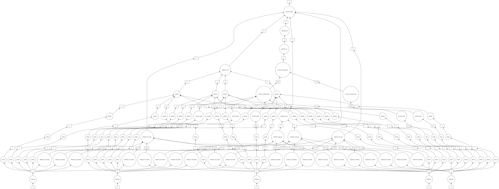
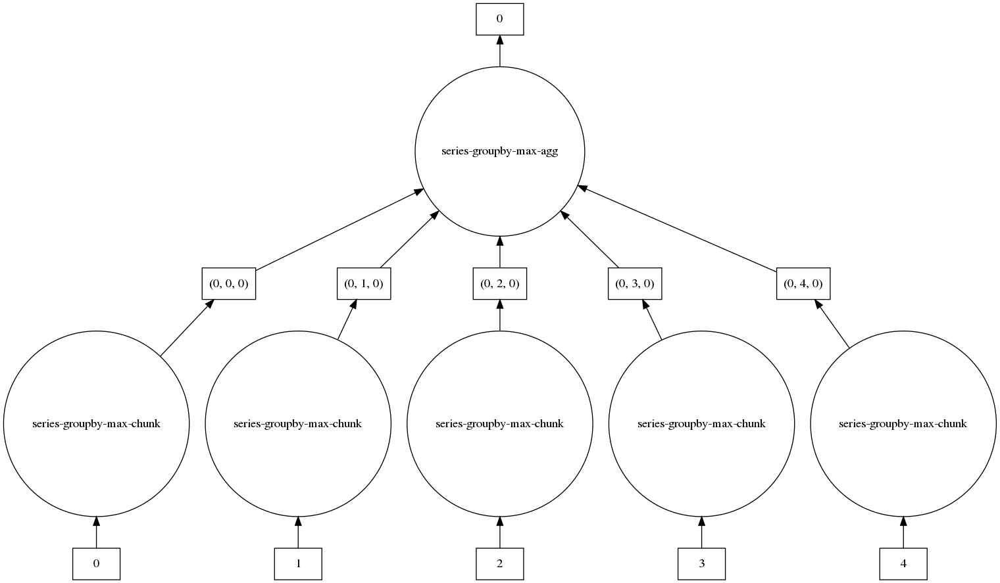
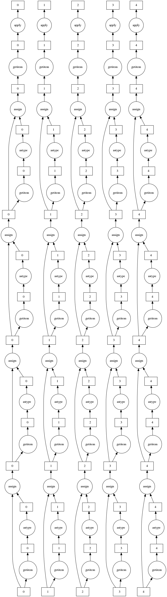

Visualizing Operations with Dask Dataframes on Fiscal Data¶
This post includes code from Scalable-Data-Analysis-in-Python-with-Dask and coiled-examples.
import numpy as np
import dask.array as da
import pandas as pd
import sqlalchemy as db
from sqlalchemy import create_engine
import sqlite3
import pandas as pd
engine = db.create_engine("sqlite:///fiscal_data.db")
connection = engine.connect()
metadata = db.MetaData()
engine.execute("SELECT * FROM fiscal_data LIMIT 1").fetchall()
[(1996, 'East China', 'Anhui', '2093.3', 50661, 631930, 147002)]
sql = """
SELECT year
, region
, province
, gdp
, fdi
, it
, specific
FROM fiscal_data
"""
cnxn = connection
df = pd.read_sql(sql, cnxn)
df
| year | region | province | gdp | fdi | it | specific | |
|---|---|---|---|---|---|---|---|
| 0 | 1996 | East China | Anhui | 2093.3 | 50661 | 631930 | 147002.0 |
| 1 | 1997 | East China | Anhui | 2347.32 | 43443 | 657860 | 151981.0 |
| 2 | 1998 | East China | Anhui | 2542.96 | 27673 | 889463 | 174930.0 |
| 3 | 1999 | East China | Anhui | 2712.34 | 26131 | 1227364 | 285324.0 |
| 4 | 2000 | East China | Anhui | 2902.09 | 31847 | 1499110 | 195580.0 |
| ... | ... | ... | ... | ... | ... | ... | ... |
| 355 | 2003 | East China | Zhejiang | 9705.02 | 498055 | 2261631 | 391292.0 |
| 356 | 2004 | East China | Zhejiang | 11648.7 | 668128 | 3162299 | 656175.0 |
| 357 | 2005 | East China | Zhejiang | 13417.68 | 772000 | 2370200 | 656175.0 |
| 358 | 2006 | East China | Zhejiang | 15718.47 | 888935 | 2553268 | 1017303.0 |
| 359 | 2007 | East China | Zhejiang | 18753.73 | 1036576 | 2939778 | 844647.0 |
360 rows × 7 columns
df.columns
Index(['year', 'region', 'province', 'gdp', 'fdi', 'it', 'specific'], dtype='object')
df.gdp.hist()
<matplotlib.axes._subplots.AxesSubplot at 0x7f0272396c50>
from dask.distributed import Client
client = Client(processes=False, threads_per_worker=2,
n_workers=3, memory_limit='4GB')
client
Client
|
Cluster
|
from dask import dataframe as dd
ddf = dd.from_pandas(df, npartitions=5)
print(ddf)
Dask DataFrame Structure:
year region province gdp fdi it specific
npartitions=5
0 int64 object object object int64 int64 float64
72 ... ... ... ... ... ... ...
... ... ... ... ... ... ... ...
288 ... ... ... ... ... ... ...
359 ... ... ... ... ... ... ...
Dask Name: from_pandas, 5 tasks
ddf.describe().visualize(filename='describe.png')

ddf.head()
| year | region | province | gdp | fdi | it | specific | |
|---|---|---|---|---|---|---|---|
| 0 | 1996 | East China | Anhui | 2093.3 | 50661 | 631930 | 147002.0 |
| 1 | 1997 | East China | Anhui | 2347.32 | 43443 | 657860 | 151981.0 |
| 2 | 1998 | East China | Anhui | 2542.96 | 27673 | 889463 | 174930.0 |
| 3 | 1999 | East China | Anhui | 2712.34 | 26131 | 1227364 | 285324.0 |
| 4 | 2000 | East China | Anhui | 2902.09 | 31847 | 1499110 | 195580.0 |
max_gdp_per_region = ddf.groupby('region')['gdp'].max()
max_gdp_per_region.visualize()

max_gdp_per_region.compute()
region
East China 9705.02
North China 9846.81
Northwest China 956.32
South Central China 9439.6
Southwest China 937.5
Northeast China 9304.52
Name: gdp, dtype: object
ddf
Dask DataFrame Structure:
| year | region | province | gdp | fdi | it | specific | |
|---|---|---|---|---|---|---|---|
| npartitions=5 | |||||||
| 0 | int64 | object | object | object | int64 | int64 | float64 |
| 72 | ... | ... | ... | ... | ... | ... | ... |
| ... | ... | ... | ... | ... | ... | ... | ... |
| 288 | ... | ... | ... | ... | ... | ... | ... |
| 359 | ... | ... | ... | ... | ... | ... | ... |
Dask Name: from_pandas, 5 tasks
ddf.npartitions
5
ddf.npartitions
5
len(ddf)
360
from dask.distributed import Client
client = Client(processes=False, threads_per_worker=2, n_workers=3, memory_limit="4GB")
client
/home/gao/anaconda3/lib/python3.7/site-packages/distributed/node.py:155: UserWarning: Port 8787 is already in use.
Perhaps you already have a cluster running?
Hosting the HTTP server on port 39701 instead
http_address["port"], self.http_server.port
Client
|
Cluster
|
client.id
'Client-9f9a71c2-0c90-11eb-976b-cff3b7a8059e'
ddf.describe().compute()
| year | fdi | it | specific | |
|---|---|---|---|---|
| count | 360.000000 | 3.600000e+02 | 3.600000e+02 | 3.560000e+02 |
| mean | 2001.500000 | 1.961394e+05 | 2.165819e+06 | 5.834707e+05 |
| std | 3.456857 | 3.030440e+05 | 1.769294e+06 | 6.540553e+05 |
| min | 1996.000000 | 2.000000e+00 | 1.478970e+05 | 8.964000e+03 |
| 25% | 1998.750000 | 3.309900e+04 | 1.077466e+06 | 2.237530e+05 |
| 50% | 2001.500000 | 1.411025e+05 | 2.020634e+06 | 4.243700e+05 |
| 75% | 2004.250000 | 4.065125e+05 | 3.375492e+06 | 1.011846e+06 |
| max | 2007.000000 | 1.743140e+06 | 1.053331e+07 | 3.937966e+06 |
ddf.columns
Index(['year', 'region', 'province', 'gdp', 'fdi', 'it', 'specific'], dtype='object')
ddf["year"] = ddf["year"].astype(int)
ddf["fdi"] = ddf["fdi"].astype(float)
# ddf["province"] = ddf["province"].astype(float)
# ddf["region"] = ddf["region"].astype(float)
ddf["gdp"] = ddf["gdp"].astype(float)
ddf["it"] = ddf["it"].astype(float)
ddf
Dask DataFrame Structure:
| year | region | province | gdp | fdi | it | specific | |
|---|---|---|---|---|---|---|---|
| npartitions=5 | |||||||
| 0 | int64 | object | object | float64 | float64 | float64 | float64 |
| 72 | ... | ... | ... | ... | ... | ... | ... |
| ... | ... | ... | ... | ... | ... | ... | ... |
| 288 | ... | ... | ... | ... | ... | ... | ... |
| 359 | ... | ... | ... | ... | ... | ... | ... |
Dask Name: assign, 65 tasks
ddf.nlargest(20, 'gdp').compute()
| year | region | province | gdp | fdi | it | specific | |
|---|---|---|---|---|---|---|---|
| 71 | 2007 | South Central China | Guangdong | 31777.01 | 1712603.0 | 4947824.0 | 859482.0 |
| 70 | 2006 | South Central China | Guangdong | 26587.76 | 1451065.0 | 4559252.0 | 1897575.0 |
| 263 | 2007 | East China | Shandong | 25776.91 | 1101159.0 | 6357869.0 | 2121243.0 |
| 69 | 2005 | South Central China | Guangdong | 22557.37 | 1236400.0 | 4327217.0 | 1491588.0 |
| 262 | 2006 | East China | Shandong | 21900.19 | 1000069.0 | 5304833.0 | 1204547.0 |
| 179 | 2007 | East China | Jiangsu | 21742.05 | 1743140.0 | 3557071.0 | 1188989.0 |
| 68 | 2004 | South Central China | Guangdong | 18864.62 | 1001158.0 | 5193902.0 | 1491588.0 |
| 359 | 2007 | East China | Zhejiang | 18753.73 | 1036576.0 | 2939778.0 | 844647.0 |
| 178 | 2006 | East China | Jiangsu | 18598.69 | 1318339.0 | 2926542.0 | 1388043.0 |
| 261 | 2005 | East China | Shandong | 18366.87 | 897000.0 | 4142859.0 | 1011203.0 |
| 67 | 2003 | South Central China | Guangdong | 15844.64 | 782294.0 | 4073606.0 | 1550764.0 |
| 358 | 2006 | East China | Zhejiang | 15718.47 | 888935.0 | 2553268.0 | 1017303.0 |
| 260 | 2004 | East China | Shandong | 15021.84 | 870064.0 | 3732990.0 | 1011203.0 |
| 143 | 2007 | South Central China | Henan | 15012.46 | 306162.0 | 10533312.0 | 3860764.0 |
| 177 | 2005 | East China | Jiangsu | 15003.60 | 1213800.0 | 3479548.0 | 1483371.0 |
| 119 | 2007 | North China | Hebei | 13607.32 | 241621.0 | 7537692.0 | 2981235.0 |
| 66 | 2002 | South Central China | Guangdong | 13502.42 | 1133400.0 | 3545004.0 | 1235386.0 |
| 357 | 2005 | East China | Zhejiang | 13417.68 | 772000.0 | 2370200.0 | 656175.0 |
| 275 | 2007 | East China | Shanghai | 12494.01 | 792000.0 | 2386339.0 | 272744.0 |
| 176 | 2004 | East China | Jiangsu | 12442.87 | 1056365.0 | 2410257.0 | 1483371.0 |
without_ec = ddf[ddf.region !='East China']
without_ec.nlargest(20, 'gdp').compute()
| year | region | province | gdp | fdi | it | specific | |
|---|---|---|---|---|---|---|---|
| 71 | 2007 | South Central China | Guangdong | 31777.01 | 1712603.0 | 4947824.0 | 859482.0 |
| 70 | 2006 | South Central China | Guangdong | 26587.76 | 1451065.0 | 4559252.0 | 1897575.0 |
| 69 | 2005 | South Central China | Guangdong | 22557.37 | 1236400.0 | 4327217.0 | 1491588.0 |
| 68 | 2004 | South Central China | Guangdong | 18864.62 | 1001158.0 | 5193902.0 | 1491588.0 |
| 67 | 2003 | South Central China | Guangdong | 15844.64 | 782294.0 | 4073606.0 | 1550764.0 |
| 143 | 2007 | South Central China | Henan | 15012.46 | 306162.0 | 10533312.0 | 3860764.0 |
| 119 | 2007 | North China | Hebei | 13607.32 | 241621.0 | 7537692.0 | 2981235.0 |
| 66 | 2002 | South Central China | Guangdong | 13502.42 | 1133400.0 | 3545004.0 | 1235386.0 |
| 142 | 2006 | South Central China | Henan | 12362.79 | 184526.0 | 7601825.0 | 2018158.0 |
| 65 | 2001 | South Central China | Guangdong | 12039.25 | 1193203.0 | 2152243.0 | 1257232.0 |
| 118 | 2006 | North China | Hebei | 11467.60 | 201434.0 | 5831974.0 | 1253141.0 |
| 64 | 2000 | South Central China | Guangdong | 10741.25 | 1128091.0 | 1927102.0 | 714572.0 |
| 141 | 2005 | South Central China | Henan | 10587.42 | 123000.0 | 5676863.0 | 1171796.0 |
| 299 | 2007 | Southwest China | Sichuan | 10562.39 | 149322.0 | 10384846.0 | 3937966.0 |
| 117 | 2005 | North China | Hebei | 10012.11 | 191000.0 | 4503640.0 | 859056.0 |
| 23 | 2007 | North China | Beijing | 9846.81 | 506572.0 | 1962192.0 | 752279.0 |
| 167 | 2007 | South Central China | Hunan | 9439.60 | 327051.0 | 8340692.0 | 3156087.0 |
| 155 | 2007 | South Central China | Hubei | 9333.40 | 276622.0 | 7666512.0 | 2922784.0 |
| 215 | 2007 | Northeast China | Liaoning | 9304.52 | 598554.0 | 5502192.0 | 3396397.0 |
| 63 | 1999 | South Central China | Guangdong | 9250.68 | 1165750.0 | 1789235.0 | 988521.0 |
ddf['province'].compute()
0 Anhui
1 Anhui
2 Anhui
3 Anhui
4 Anhui
...
355 Zhejiang
356 Zhejiang
357 Zhejiang
358 Zhejiang
359 Zhejiang
Name: province, Length: 360, dtype: object
ddf.where(ddf['province']=='Zhejiang').compute()
| year | region | province | gdp | fdi | it | specific | |
|---|---|---|---|---|---|---|---|
| 0 | NaN | NaN | NaN | NaN | NaN | NaN | NaN |
| 1 | NaN | NaN | NaN | NaN | NaN | NaN | NaN |
| 2 | NaN | NaN | NaN | NaN | NaN | NaN | NaN |
| 3 | NaN | NaN | NaN | NaN | NaN | NaN | NaN |
| 4 | NaN | NaN | NaN | NaN | NaN | NaN | NaN |
| ... | ... | ... | ... | ... | ... | ... | ... |
| 355 | 2003.0 | East China | Zhejiang | 9705.02 | 498055.0 | 2261631.0 | 391292.0 |
| 356 | 2004.0 | East China | Zhejiang | 11648.70 | 668128.0 | 3162299.0 | 656175.0 |
| 357 | 2005.0 | East China | Zhejiang | 13417.68 | 772000.0 | 2370200.0 | 656175.0 |
| 358 | 2006.0 | East China | Zhejiang | 15718.47 | 888935.0 | 2553268.0 | 1017303.0 |
| 359 | 2007.0 | East China | Zhejiang | 18753.73 | 1036576.0 | 2939778.0 | 844647.0 |
360 rows × 7 columns
mask_after_2010 = ddf.where(ddf['year']>2000)
mask_after_2010.compute()
| year | region | province | gdp | fdi | it | specific | |
|---|---|---|---|---|---|---|---|
| 0 | NaN | NaN | NaN | NaN | NaN | NaN | NaN |
| 1 | NaN | NaN | NaN | NaN | NaN | NaN | NaN |
| 2 | NaN | NaN | NaN | NaN | NaN | NaN | NaN |
| 3 | NaN | NaN | NaN | NaN | NaN | NaN | NaN |
| 4 | NaN | NaN | NaN | NaN | NaN | NaN | NaN |
| ... | ... | ... | ... | ... | ... | ... | ... |
| 355 | 2003.0 | East China | Zhejiang | 9705.02 | 498055.0 | 2261631.0 | 391292.0 |
| 356 | 2004.0 | East China | Zhejiang | 11648.70 | 668128.0 | 3162299.0 | 656175.0 |
| 357 | 2005.0 | East China | Zhejiang | 13417.68 | 772000.0 | 2370200.0 | 656175.0 |
| 358 | 2006.0 | East China | Zhejiang | 15718.47 | 888935.0 | 2553268.0 | 1017303.0 |
| 359 | 2007.0 | East China | Zhejiang | 18753.73 | 1036576.0 | 2939778.0 | 844647.0 |
360 rows × 7 columns
def add_some_text(cname, *args, **kwargs):
return "Region name is " + cname
dummy_values = ddf['region'].apply(add_some_text, axis=1)
/home/gao/anaconda3/lib/python3.7/site-packages/dask/dataframe/core.py:3208: UserWarning:
You did not provide metadata, so Dask is running your function on a small dataset to guess output types. It is possible that Dask will guess incorrectly.
To provide an explicit output types or to silence this message, please provide the `meta=` keyword, as described in the map or apply function that you are using.
Before: .apply(func)
After: .apply(func, meta=('region', 'object'))
warnings.warn(meta_warning(meta))
dummy_values
Dask Series Structure:
npartitions=5
0 object
72 ...
...
288 ...
359 ...
Name: region, dtype: object
Dask Name: apply, 75 tasks
dummy_values.visualize()

dummy_values.compute()
0 Region name is East China
1 Region name is East China
2 Region name is East China
3 Region name is East China
4 Region name is East China
...
355 Region name is East China
356 Region name is East China
357 Region name is East China
358 Region name is East China
359 Region name is East China
Name: region, Length: 360, dtype: object
max_per_region_yr = ddf.groupby('region').apply(lambda x: x.loc[x['gdp'].idxmax(), 'year'])
/home/gao/.local/lib/python3.7/site-packages/ipykernel_launcher.py:1: UserWarning: `meta` is not specified, inferred from partial data. Please provide `meta` if the result is unexpected.
Before: .apply(func)
After: .apply(func, meta={'x': 'f8', 'y': 'f8'}) for dataframe result
or: .apply(func, meta=('x', 'f8')) for series result
"""Entry point for launching an IPython kernel.
max_per_region_yr.visualize()

max_per_region_yr.compute()
region
North China 2007
Northeast China 2007
Northwest China 2007
South Central China 2007
East China 2007
Southwest China 2007
dtype: int64